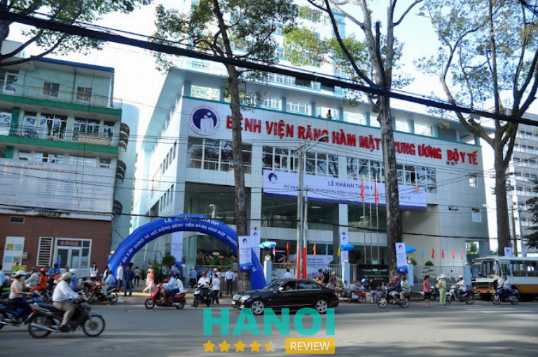
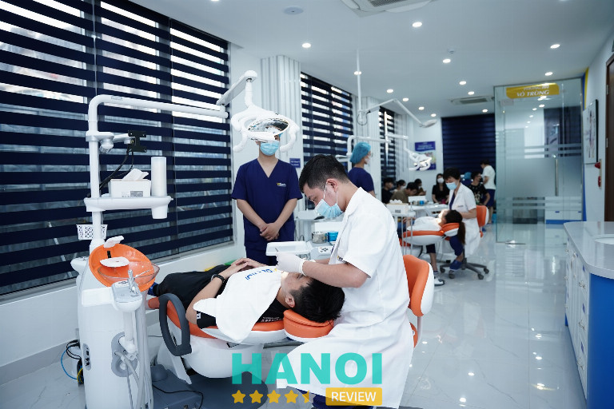
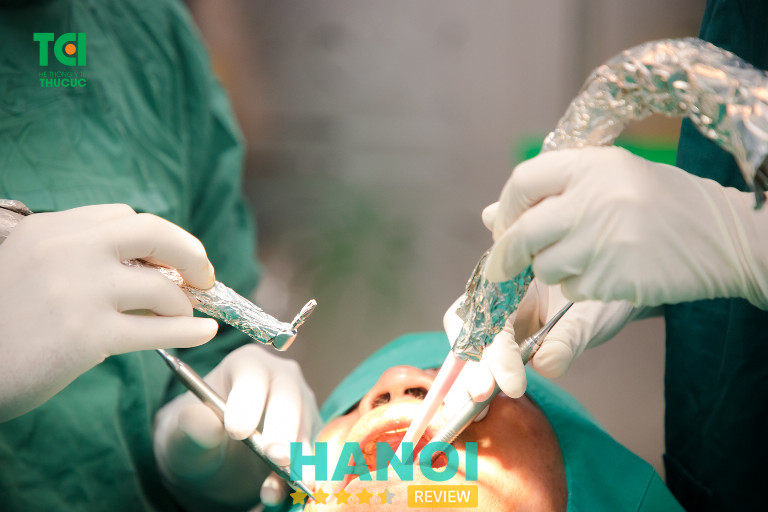
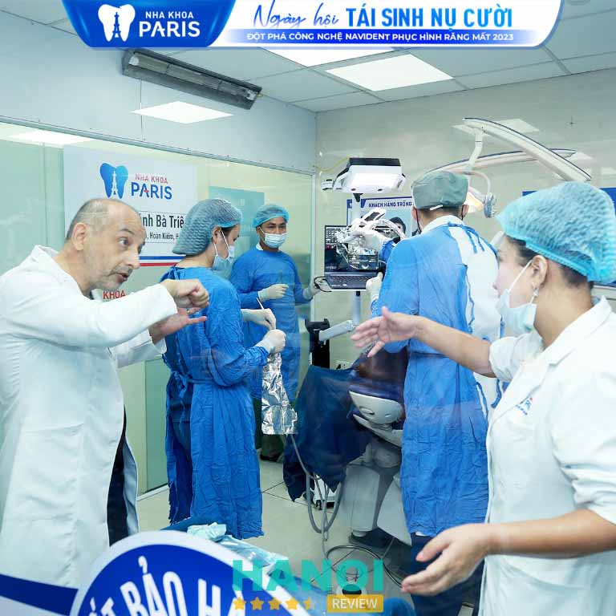
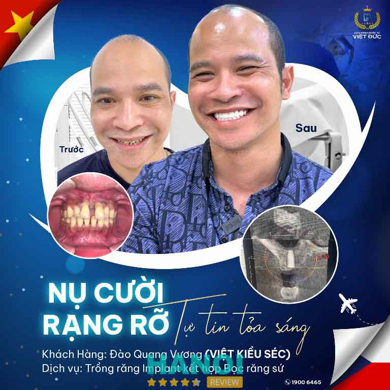
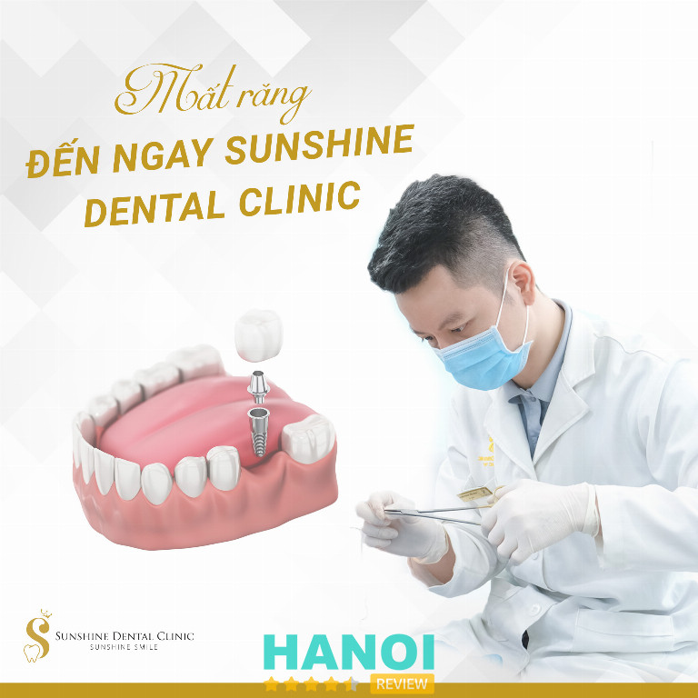
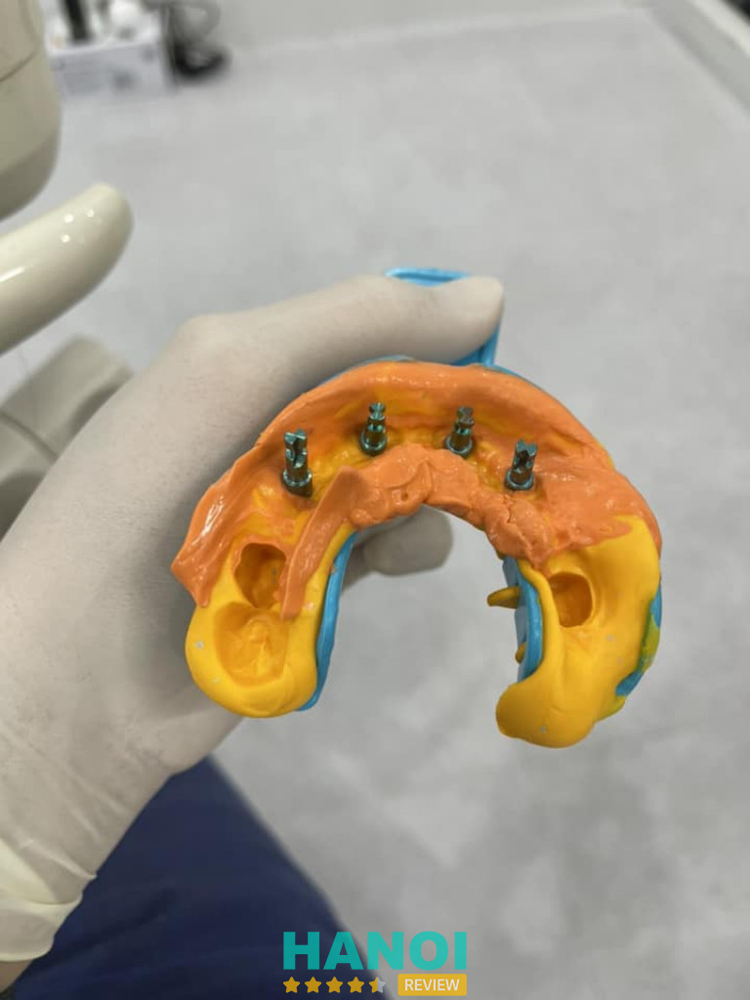
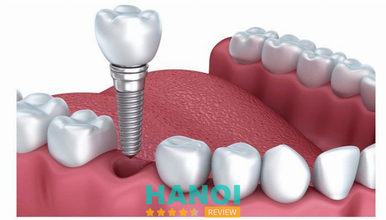
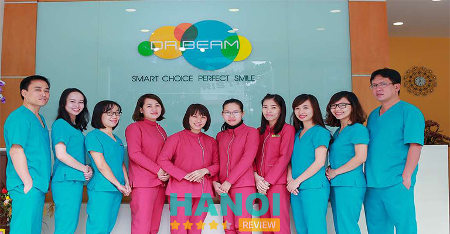

10 Địa chỉ trồng răng Implant tại Hà Nội tốt nhất, có bảo hành
Trồng răng implant là một trong các phương pháp nha khoa phức tạp, đòi hỏi bác sĩ thực hiện cần có tay nghề cao cùng các vật liệu nha khoa chất lượng. Điều đó có thể được tìm thấy tại 1 trong 10 địa chỉ trồng răng implant tại Hà Nội tốt nhất và có cung cấp phiếu bảo hành trong nội dung sau.
Top 10 Nha khoa trồng răng implant ở Hà Nội giá tốt, an toàn
Khi bị mất đi một chiếc răng, việc phục hồi hay mọc lại ở những đối tượng trưởng thành là điều không thể. Với sự phát triển vượt bậc của công nghệ, khoa học, phương pháp cấy răng implant đã trở thành cứu tinh cho vấn đề này.
Tuy nhiên, đây là một thủ thuật khá phức tạp đòi hỏi cao về cả yếu tố con người lẫn công nghệ, hệ thống máy móc và các vật liệu nha khoa chuyên dụng. Vậy, để hỗ trợ bạn đọc vượt qua những thách thức trong việc tìm kiếm địa chỉ trồng răng implant ở Hà Nội chất lượng, chuyên nghiệp nhất, HaNoiReview đã không ngần ngại dành thời gian tổng hợp các cơ sở như sau:
Bệnh viện Răng Hàm Mặt Trung Ương
Địa chỉ trồng răng implant ở Hà Nội uy tín đầu tiên không phải là nơi nào khác ngoài Bệnh viện Răng Hàm Mặt Trung Ương. Đơn vị với hơn 3 thập kỷ hoạt động trong lĩnh vực cung cấp các dịch vụ chuyên sâu về răng hàm mặt cho người dân ở khu vực miền Bắc.
Với chức năng chuyên về các phương pháp thiên về chữa trị, cấp cứu, phục hồi đến toàn bộ các vấn đề liên quan đến răng miệng, Bệnh viện Răng Hàm Mặt Trung Ương chính là nơi đã thành công thực hiện hàng trăm ca gắn implant đơn hoặc toàn bộ hàm cho nhiều trường hợp mất răng do chấn thương, bệnh lý hoặc do tuổi tác, …
Cùng với nhiều thế hệ bác sĩ nha khoa, răng hàm mặt có tiếng, Bệnh viện Răng Hàm Mặt Trung Ương vẫn luôn được biết đến với đội ngũ nhân sự hàng đầu khu vực. Quy trình tuyển chọn cũng như đào tạo bác sĩ, đội ngũ y tế cũng được thực hiện khắt khe để đảm bảo mỗi thành viên đều là nhân lực tạo nên giá trị tốt nhất cho cộng đồng.

Mặc dù đã là một trong các cơ sở chăm sóc răng hàm mặt lâu đời tại Hà Nội, những Bệnh viện Răng Hàm Mặt Trung Ương không ngừng cập nhật xu hướng để vươn mình phát triển. Chính vì lẽ đó, nơi đây luôn nhận được sự hài lòng cũng như nhiều lời khen ngợi từ phía khách hàng.
Môi trường điều trị tại Bệnh viện Răng Hàm Mặt Trung Ương cũng được phân bố hợp lý với nhiều khu vực chức năng phong phú. Hệ thống giường bệnh rộng lớn cùng các tiện nghi hiện đại tạo điều kiện để khách hàng có thể đăng ký lưu trú tại bệnh viện khi cần thời gian dài theo dõi.
Bệnh viện Răng Hàm Mặt Trung Ương cũng là một cơ sở y tế có sự hỗ trợ của nhà nước, chính vì thế, mức giá cấy ghép implant tại đây khá phải chăng. Chưa kể đến việc khách hàng có thể áp dụng đồng thời bảo hiểm y tế khi thăm khám, điều trị hay sử dụng bất kỳ dịch vụ nào tạo Bệnh viện Răng Hàm Mặt Trung Ương.
Thông tin liên hệ:
- Địa chỉ: 40B Tràng Thi, P. Hàng Bông, Q. Hoàn Kiếm, TP. Hà Nội
- Điện thoại: 1900 8686 66
- Website: ranghammat.org.vn
- Facebook: FB.com/bvranghammat
Nha khoa Vidental
Trong các bảng đánh giá về những địa chỉ trồng răng implant tốt nhất ở Hà Nội, thì cái tên không ngừng được khách hàng đề cập đến chính là Nha khoa Vidental. Với bề dày hơn 10 năm kinh nghiệm, nơi đây chắc chắn sẽ không làm bất kỳ khách hàng nào phải thất vọng.
Nha khoa Vidental gây ấn tượng với dịch vụ chất lượng dưới sự dẫn dắt của bản quản lý là các y bác sĩ nha khoa có đến 15 năm hoạt động trong ngành nghề. Nơi đây còn quy tụ rất nhiều các bác sĩ chuyên gia có đầy đủ bằng cấp, chuyên môn cao cũng như luôn giữ vững đạo đức nghề nghiệp khi thực hiện các dịch vụ y tế tiên tiến, hướng đến lợi ích khách hàng là trọng tâm.

Trong quá trình trồng răng implant, Nha khoa Vidental có áp dụng kèm công nghệ PRF. Đây là kỹ thuật hiện đại có thể hỗ trợ tăng tái tạo cấu trúc xương. Nhờ đó, hàm răng của khách hàng dù là sau khi đã cắm implant vẫn có thể hoạt động tốt và phát triển khỏe mạnh như răng thật.
Tính thẩm mỹ cũng được ứng dụng chặt chẽ trong quá trình chế tác răng sứ và trụ implant. Mỗi khách hàng có quy trình cấy ghép riêng biệt, từ kỹ thuật lấy tỷ lệ hiện đại, chính xác, đội ngũ kỹ thuật viên có thể tạo nên các răng sứ có hình dáng, màu sắc có độ tương đồng cao với răng thật sẵn có của khách hàng.
Vật liệu nha khoa tại Nha khoa Vidental đều là hàng chính hãng được nhập khẩu từ các thương hiệu nổi tiếng ở thị trường quốc tế. Răng sứ đến trụ implant đều được trải qua quá trình kiểm định chất lượng nghiêm ngặt bởi Bộ Y Tế cũng như tổ chức FDA.
Vậy, nếu bạn đang rối bời giữa vô vàn các lựa chọn, thì Nha khoa Vidental chính là phòng khám cấy ghép implant chất lượng hàng đầu. Mỗi lần trải nghiệm dịch vụ tại đây bạn sẽ có được những cảm nhận hoàn toàn khác biệt, hài lòng.
Thông tin liên hệ:
- Địa chỉ: 18 Huỳnh Thúc Kháng kéo dài, Đống Đa, Hà Nội
- Điện thoại: 0987 933 309
- Website: nhakhoavidental.com
- Facebook: FB.com/nhakhoavidentalvietnam
Bệnh viện đa khoa Thu Cúc
Trồng răng implant là một thủ thuật nha khoa phức tạp cũng yêu cầu cao về tính thẩm mỹ, và Bệnh viện đa khoa Thu Cúc chính là một đơn vị có thế mạnh trong lĩnh vực thẩm mỹ, làm đẹp ở Hà Nội có cung cấp các dịch vụ cấy ghép implant chất lượng cao.
Qua hơn 10 hình thành và phát triển trên thị trường đa dạng, Bệnh viện đa khoa Thu Cúc đã mở rộng nhiều chi nhánh trong nước ta. Tiếp cận khách hàng trên diện rộng cũng như tạo điều kiện để người dân mọi nơi có thể được chăm sóc sức khỏe, sắc đẹp bằng các phương pháp tiên tiến hàng đầu.
Điểm đặc biệt đầu tiên phải nhắc đến khi nói đến dịch vụ trồng răng implant tại Bệnh viện đa khoa Thu Cúc chính là đội ngũ nhân sự. Các y bác sĩ ngoài việc phải trải qua các vòng tuyển chọn có độ khó cao thì việc rèn luyện, tu nghiệp trong nước cũng như quốc tế đã mang đến những khả năng nổi bật, xứng danh là các chuyên gia cấy ghép implant hàng đầu.

100% hệ thống máy móc tại Bệnh viện đa khoa Thu Cúc được nghiên cứu, chọn lọc và nhập khẩu từ các nước phát triển quốc tế. Trong từng giai đoạn, để phù hợp với nhu cầu và xu hướng hiện đại, thì bệnh viện cũng tích cực cập nhật nhanh chóng các công nghệ, bảo dưỡng, nâng cấp hệ thống trang thiết bị để mang đến các dịch vụ đẳng cấp, chuyên nghiệp như đã hứa hẹn.
Hơn nữa, để đảm bảo an toàn cho sức khỏe của số lượng lớn khách hàng đến tại cơ sở mỗi ngày, Bệnh viện đa khoa Thu Cúc chú trọng đến công tác khử trùng, diệt khuẩn từ môi trường cho đến các dụng cụ, máy móc một cách triệt để. Toàn bộ dụng cụ thăm khám, vật liệu tiêu hao được sử dụng riêng, bảo quản kỹ lưỡng và loại bỏ hoàn toàn sau khi thăm khám.
Đối với các khách hàng có bảo hiểm, có thể sử dụng khi đăng ký thăm khám, hay cấy ghép implant tại đây. Bệnh viện đa khoa Thu Cúc cam kết sẽ luôn là nơi mang đến các dịch vụ chất lượng với mức giá cạnh tranh nhất trên thị trường.
Thông tin liên hệ:
- Địa chỉ: 286 Thụy Khuê, P. Thuỵ Khuê, Q. Tây Hồ, TP. Hà Nội
- Điện thoại: 1900 5588 92
- Website: benhvienthucuc.vn
- Facebook: FB.com/benhvienthucuc.vn
XEM THÊM: 10 Địa chỉ nhổ răng khôn tại Hà Nội không đau, uy tín, giá tốt
Nha khoa Paris
Có thể khi nhắc đến Nha khoa Paris, bạn sẽ liên tưởng ngay đến một hệ thống nha khoa rộng lớn phủ khắp nhiều tình thành, quận huyện trên cả nước. Tại Hà Nội, Nha khoa Paris có 2 cơ sở phòng khám chăm sóc răng miệng cũng được đầu tư đồng bộ và phát triển đồng đều.
Nổi bật nhất chính là cơ sở của Nha khoa Paris tại khu vực Đống Đa. Nơi đây được người dân đánh giá cao như là một địa chỉ cấy ghép implant hàng đầu tại Hà Nội. Điều này thể hiện ở việc, Nha khoa Paris đã thành công hoàn thiện hàm răng bị mất dù chỉ là một chiếc cho nhiều khách hàng ở mức hoàn hảo.

Với 5 yếu tố đảm bảo đạt 100% là đội ngũ bác sĩ có tối thiểu 15 năm kinh nghiệm – trang thiết bị, máy móc có nguồn gốc quốc tế – hệ thống phòng khám vô trùng – vật liệu nha khoa ngoại nhật – khách hàng được hưởng chính sách bảo hành. Nha khoa Paris cam kết đối xử công bằng và phát triển không ngừng vì quyền lợi và sức khỏe của khách hàng là mục tiêu tối thượng.
Tất cả các trụ implant tại Nha khoa Paris đều có xuất xứ từ Hàn Quốc, Nhật Bản, Thụy Sĩ, Mỹ, Pháp, … Sự đa dạng này cũng là nguyên nhân của bảng giá các dịch vụ gắn implant có sự giao động khác nhau. Điều này giúp khách hàng có thể thoải mái lựa chọn mà không bị áp lực về tài chính.
Với những điểm nổi bật trên, Nha khoa Paris đã trở thành một trong các địa chỉ trồng răng implant đáng tin cậy ở Hà Nội mà bạn không thể bỏ lỡ. Qua nhiều năm kinh nghiệm cùng những nỗ lực không ngừng nghỉ, sự ghi nhận của khách hàng chính là nguồn động lực lớn nhất của Nha khoa Paris.
Thông tin liên hệ:
- Địa chỉ: 112 P. Bà Triệu, P. Nguyễn Du, Q. Hoàn Kiếm, TP. Hà Nội
- Điện thoại: 0943 776 699
- Website: nhakhoaparis.vn
- Facebook: FB.com/NhaKhoaParis
XEM THÊM: 5 Phòng khám nha khoa tại Q. Hoàn Kiếm chất lượng đi đầu
Nha khoa Việt Đức
Dịch vụ cấy ghép implant thường phổ biến với các khách hàng bị mất từ 1-2 răng hoặc mất nhiều răng không liền kề, mất răng toàn bộ hàm. Để được phục hồi răng an toàn, hiệu quả nhất, thì việc chọn địa chỉ trồng răng implant là điều vô cùng cần thiết.
Trong vô số các lựa chọn, Nha khoa Việt Đức nổi trội như một điểm sáng. Điều này được thể hiện qua con số 5000 là số ca cấy ghép implant thành công mà đội ngũ nha khoa tại đây đã thực hiện.
Không dừng lại ở đó, với hơn 15 năm kinh nghiệm kể từ ngày thành lập năm 2005, Bác sĩ Lê Văn Thạch là chuyên gia hàng đầu có nhiều năm làm nghề đã định hướng phát triển của phòng khám theo tiêu chuẩn chất lượng cao. Đề cao quyền lợi, sức khỏe của khách hàng như một yếu tố trọng tâm để luôn mang lại các kết quả tốt nhất.

Kỹ thuật cấy ghép implant và toàn bộ quy trình tại Nha khoa Việt Đức đều được bác sĩ Thạch chuyển giao trực tiếp từ Đức. Đây là đơn vị tiên phong tại Việt Nam trong việc ứng dụng trụ implant trong các phương pháp phục hình răng đã mất.
Phần lớn các y bác sĩ kỳ cựu tại Nha khoa Việt Đức đều có hơn 15 năm kinh nghiệm. Đồng hành từ những ngày đầu thành lập, đội ngũ luôn hiểu định hướng cũng như những khát khao mà phòng khám mong muốn mang đến cho khách hàng.
Với việc sở hữu và ứng dụng công nghệ cấy ghép implant All-in-4, Nha khoa Việt Đức có thể tối ưu hóa thời gian thực hiện, tăng độ chính xác ngay từ những bước đầu tiên. Phần mềm thông minh tại Nha khoa Việt Đức cũng tạo điều kiện để khách hàng có thể trực tiếp quan sát trước kết quả điều trị.
Đặc biệt hơn hết, trong phòng khám nha khoa chuẩn 5 sao, Nha khoa Việt Đức luôn cam kết đảm bảo an toàn về sức khỏe cho mọi khách hàng khi sử dụng bất kỳ dịch vụ nào tại đây. Bạn sẽ nhận được kết quả không chỉ hài lòng về tính thẩm mỹ mà còn an tâm về độ bền bỉ của từng chiếc răng được cấy ghép implant tại đây.
Thông tin liên hệ:
- Địa chỉ: 29 Phủ Doãn, P. Hàng Trống, Q. Hoàn Kiếm, TP. Hà Nội
- Điện thoại: 1900 6465
- Website: nhakhoavietduc.com.vn
- Facebook: FB.com/nhakhoaquoctevietduc.29phudoan
Nha Khoa Sunshine Dental Clinic
Nha Khoa Sunshine Dental Clinic là địa chỉ trồng răng implant nhận được sự tín nhiệm cao của người dân tại Hà Nội. Với các phương pháp tiên tiến tại đây, khách hàng có thể phục hồi lại răng đã mất, tăng cường khả năng ăn uống, tăng độ bền bỉ của hàm răng trong thời gian trọn đời, …
Đội ngũ y bác sĩ tại Nha Khoa Sunshine Dental Clinic là những chuyên gia răng hàm mặt hàng đầu có chuyên môn cao và sở hữu nhiều năm kinh nghiệm trong việc cấy ghép implant cho hàng ngàn khách hàng. Hơn hết, phong cách làm việc của các bác sĩ, đội ngũ nhân viên tại Nha Khoa Sunshine Dental Clinic cũng hết sức thân thiện, chu đáo và luôn nỗ lực hết mình vì bệnh nhân.

Quy trình trồng răng implant tại Nha Khoa Sunshine Dental Clinic sẽ được thực hiện theo trình tự các bước thăm khám, tư vấn bởi chuyên gia. Trước khi cấy ghép, khách hàng sẽ được chụp film để xác định rõ vị trí và tình trạng mất răng. Sau đó, các bước được lên kế hoạch theo phác đồ cá nhân hóa để từng bước hoàn thiện cấy ghép implant một cách hoàn hảo.
Phần lớn khách hàng thực hiện xong dịch vụ cấy ghép implant tại Nha Khoa Sunshine Dental Clinic đều thể hiện sự hài lòng vượt trội. Do đó, nếu bạn cũng muốn có được những trải nghiệm tương tự và ấn tượng, hãy đăng ký ngay để không bỏ lỡ các ưu đãi hấp dẫn tại Nha Khoa Sunshine Dental Clinic.
Thông tin liên hệ:
- Địa chỉ: 146 Lạc Trung, P. Thanh Lương, Q. Hai Bà Trưng, TP. Hà Nội
- Điện thoại: 0989 377 255
- Website: sunshinedental.vn
- Facebook: FB.com/sunshinedental.vn
Nha khoa Smart
Được biết đến là một trong các phòng khám công nghệ cao, hiện đại và chuyên về nha khoa tại Hà Nội, Nha khoa Smart trở thành địa chỉ trồng răng implant đánh tin cậy của đông đảo người dân ở Hà Nội. Với nhiều năm liền hoạt động tích cực, đơn vị đã thành công để lại nhiều dấu ấn cùng những thành công nổi trội trong lòng khách hàng.
Phương pháp cấy ghép implant tại Nha khoa Smart được triển khai đào tạo và cập nhật liên tục cho các chuyên gia có kinh nghiệm và chuyên môn cao. Hơn nữa, để hỗ trợ mọi ca cấy ghép răng diễn ra suôn sẻ, thuận lợi, nha khoa cũng mạnh tay đầu tư cho hệ thống máy móc tiên tiến từ quốc tế.

Các trụ implant được nhập khẩu từ nước ngoài thông quan quy trình nghiên cứu, tìm hiểu và chọn lọc kỹ lưỡng. Các sản phẩm này đều có chứng nhận an toàn và hiệu quả trong các phương pháp phục hình răng kể từ khi công nghệ implant được phát triển.
Về mặt giá cả, Nha khoa Smart không làm khách hàng phải thất vọng với sự đa dạng trong phân khúc giá. Mỗi loại trụ từ các vật liệu, xuất xứ khác nhau đều đảm bảo chất lượng những có sự chênh lệch về giá thành.
Nhờ đó, mọi khách hàng khi có nhu cầu đều có thể an tâm sử dụng các phương pháp cấy ghép implant mà không cần quá áp lực về mặt tài chính. Nha khoa Smart còn tinh tế hỗ trợ người dân với nhiều ưu đãi và chính sách trả góp không lãi suất trong dịch vụ này.
Vì thế, không sai khi nói Nha khoa Smart là địa chỉ trồng răng implant tại Hà Nội chất lượng cao mà bạn không thể không biết đến. Với đội ngũ nhân sự giàu kinh nghiệm, cơ sở vật chất hiện đại và vật liệu nha khoa chính hãng, Nha khoa Smart sẽ tạo nên kết quả ưng ý nhất để bạn có thể tự tin với hàm răng chắc khỏe của mình.
Thông tin liên hệ:
- Địa chỉ: 227 Doãn Kế Thiện, P. Mai Dịch, Q. Cầu Giấy, TP. Hà Nội
- Điện thoại: 0932 281 218
- Website: nhakhoasmart.com
- Facebook: FB.com/nhakhoasmart3
THAM KHẢO: 5 Phòng khám nha khoa Q. Cầu Giấy được tin chọn hàng đầu
Bệnh viện Quân Y 103
Bệnh viện 103 Hà Nội trực thuộc Học viện Quân Y là phòng khám chuyên khoa răng hàm mặt chất lượng cao. Đơn vị được thành lập từ 2013 với chức năng thăm khám, điều trị và can thiệp các vấn đề liên quan đến sức khỏe răng hàm mặt toàn diện.
Nơi đây chuyên cung cấp đa dạng các dịch vụ như điều trị nha khoa, điều trị hở lợi, tẩy trắng răng, bọc răng sứ, nha khoa tổng quát, … Trong đó, các phương pháp trồng răng implant được đánh giá cao về hiệu quả và độ bền.

Với diện tích 100m2, Bệnh viện 103 có đến 4 khu chức năng độc lập để hỗ trợ thăm khám và điều trị các loại bệnh lý khác nhau. Bệnh viện trang bị đầy đủ các máy móc và hệ thống trang thiết bị như X Quang, máy Wave One, máy laser, máy định vị chóp,.. cùng các công cụ hiện đại để hỗ trợ tốt nhất cho quá trình trồng răng.
Đội ngũ bác sĩ và các nhân viên tại đây được khách hàng đánh giá cao về khả năng chuyên môn cũng như phong cách làm việc. Mỗi bác sĩ không chỉ có khả năng thăm khám, chẩn đoán, điều trị chính xác mà còn hết sức thân thiện, tâm lý để không mang lại cảm giác lo sợ cho khách hàng.
Có thể nói, Bệnh viện 103 là một trong các địa chỉ trồng răng implant chất lượng mà bạn nên xem xét. Với các yếu tố lợi thế và mức giá phải chăng, Bệnh viện 103 luôn là lựa chọn tối ưu cho mọi nhóm khách hàng có các khả năng tài chính đa dạng.
Thông tin liên hệ:
- Địa chỉ: 261 Phùng Hưng, P. Phúc La, Q. Hà Đông, TP. Hà Nội
- Điện thoại: 0967 811 616
- Website: benhvien103.vn
- Facebook: FB.com/Benhvienquany
Nha khoa DND
Nha khoa DND được thành lập từ năm 2015, qua hơn một thập kỷ không ngừng cải tiến và phát triển, phòng khám đã được ghi nhận bởi đông đảo khách hàng trong và ngoài khu vực.
Được dẫn dắt bởi bác sĩ Nguyễn Văn Tý, bác sĩ Phạm Nhật Huy là những chuyên gia hàng đầu có hơn 20 năm hoạt động nha khoa chuyên nghiệp, Nha khoa DND thành công phục hục hàng ngàn khách hàng. Không chỉ vậy, mọi dịch vụ tại Nha khoa DND đều mang lại kết quả ưng ý và sự hài lòng cho khách hàng.

Đứng vững trên thị trường nha khoa tại Hà Nội đầy biến động, Nha khoa DND trở thành địa chỉ trồng răng implant chất lượng cao tại Hà Nội. Với những công nghệ hiện đại cùng ứng dụng của hệ thống máy móc thông minh, tối tân, đội ngũ có thể giúp khách hàng hoàn thiện từ một đến nhiều răng đã mất có độ tương đồng cao với răng thật.
Tại Nha khoa DND, đội ngũ rất quan tâm đến cảm nhận cũng như những đóng góp của khách hàng. Chính vì thế, nha khoa luôn tinh tế phân phối dịch vụ với mức giá cạnh tranh.
Bên cạnh đó là việc không ngừng tạo ra nhiều chương trình khuyến mãi, ưu đãi hấp dẫn để tối ưu hóa chi phí. Điều này đã mang đến sự hài lòng, an tâm cũng như tinh thần thoải mái khi khách hàng sử dụng các dịch vụ nha khoa chuyên nghiệp tại đây, không chỉ riêng cấy ghép implant.
Chính vì thế, có thể tự tin nói rằng, Nha khoa DND chính là một trong những địa chỉ trồng răng implant giá tốt tại Hà Nội. Hãy đến và trải nghiệm những dịch vụ ấn tượng cùng phong cách làm việc tận tâm, chuyên nghiệp của đội ngũ nhân sự tại Nha khoa DND.
Thông tin liên hệ:
- Địa chỉ: 157 Bùi Thị Xuân, P. Bùi Thị Xuân, Q. Hai Bà Trưng, TP. Hà Nội
- Điện thoại: 0832 124 124
- Website: nhakhoadnd.com
- Facebook: FB.com/NhaKhoaQuocTeDND
Nha khoa Thúy Đức
Từ lâu, Nha khoa Thúy Đức được biết đến với cái tên thân thuộc là Nha khoa Tâm An. Hàng ngàn khách hàng đã chọn nơi đây là địa chỉ trồng răng implant ở Hà Nội đáng tin cậy trong suốt nhiều năm.
Nha khoa Thúy Đức không chỉ là nơi thăm khám, điều trị các vấn đề răng miệng của khách hàng khu vực.. Phòng khám còn tiếp nhận điều trị cho cả những khách hàng quốc tế, khách du lịch khi đến Việt Nam, cụ thể là tại khu vực Thủ Đô.
Với tệp khách hàng đa dạng như trên, có thể phần nào nói lên những điểm mạnh của đội ngũ nhân sự tại đây. Các y bác sĩ, nhân viên y tế, nhân viên tư vấn không chỉ là những thành viên tận tâm, giỏi ngành nghề mà còn có khả năng giao tiếp thành thạo bằng tiếng Anh để khách hàng ngoại quốc không gặp khó khăn khi sử dụng dịch vụ.
Đối với dịch vụ trồng răng implant nói riêng và các dịch vụ nha khoa tại Hà Nội nói chung, Nha khoa Thúy Đức đều đã và đang nhận được nhiều đánh giá tốt trên nhiều nền tảng uy tín. Đồng hành cùng số lượng lớn khách hàng trong việc thăm khám, điều trị các vấn đề nha khoa từ cơ bản đến chuyên sâu.
Phương pháp implant được chú trọng phát triển từ việc nghiên cứu, cập nhật công nghệ, kỹ thuật cho đến đầu tư mạnh tay về hệ thống máy móc và vật tư nha khoa. Đội ngũ bác sĩ thực hiện phương pháp này cũng là những người có chuyên môn, kinh nghiệm và được đào tạo bài bản chuyên sâu trong lĩnh vực cấy ghép implant.
Tuy nhiên, một điểm cần lưu ý chính là mức giá. Chi phí cho mỗi trường hợp cấy ghép implant tại đây khá cao so với mặt bằng chung. Do đó, các khách hàng có mức thu nhập tương đối tốt có thể thích hợp khi sử dụng dịch vụ ở nơi đây.
Thông tin liên hệ:
- Địa chỉ: 64 P. Vọng, Phường Phương Đình, Q. Đống Đa, TP. Hà Nội
- Điện thoại: 0931 863 366
- Website: nhakhoathuyduc.com.vn
- Facebook: FB.com/nhakhoathuyduc64phovong
THAM KHẢO: 5 Phòng khám nha khoa tại Q. Đống Đa uy tín, BS giỏi
Lưu ý khi chọn các địa chỉ trồng răng implant ở Hà Nội
Sau khi đã nằm lòng các địa chỉ trồng răng implant ở Hà Nội được đội ngũ gợi ý hoặc chọn được một trong số các cơ sở đó làm điểm đến lý tưởng, thị bạn cũng cần tham khảo thêm các lưu ý cực kỳ quan trọng.
Đây sẽ là những thông tin hữu ích để bạn có thể đối chiếu với các bảng đánh giá, xếp hạng cũng như làm cơ sở vững chắc để hỗ trợ đưa ra lựa chọn tốt nhất cho bản thân. Đừng bỏ lỡ một số lưu ý HaNoiReview gợi ý ngay trong nội dung tiếp theo.
Khi lựa chọn các địa chỉ trồng răng implant tại Hà Nội uy tín, chất lượng, nhất định bạn cần lưu ý tới một số điểm như sau:
- Kiểm tra chuyên môn, chứng chỉ của bác sĩ nha khoa: Có thể nói, bác sĩ hay các chuyên gia về răng hàm mặt là yếu tố không thể thiếu và có vai trò quan trọng nhất khi bạn thực hiện bất kỳ dịch vụ nào. Ngay cả trong một phương pháp khó như cấy ghép implant, thì bạn nên xem xét kỹ về chứng chỉ, kinh nghiệm cũng như khả năng chuyên lẫn số năm kinh nghiệm đã từng thực hiện dịch vụ này để tạo sự an tâm cũng như mang lại kết quả tốt nhất.
- Xem xét điều kiện cơ sở vật chất: Như đã đề cập, sự hỗ trợ của máy móc tối tân cũng là cánh tay đắc lực góp phần cho sự thành công của phương pháp này. Nhờ chức năng tối tân của các thiết bị, bác sĩ có thể chẩn đoán chính xác tình trạng răng động thời tạo ra các trụ implant, răng sứ giả chất lượng nhất để thay thế cho răng đã mất một cách chắc chắn.
- Kiểm tra, so sánh giá cả: Dịch vụ càng phức tạo thì mức giá lại càng cao. Và trồng răng implant cũng không phải là một ngoại lệ. Bạn nên tìm hiểu bảng giá của ít nhất 3 cơ sở có cùng chất lượng để thực hiện so sánh giá và chọn ra địa chỉ phù hợp nhất với khả năng tài chính.
- Dịch vụ chu đáo, nhiệt tình: Khi đến tại bất kỳ phòng khám nha khoa nào ở Hà Nội, việc được tiếp đón hoan hỉ, nhiệt tình là điều khách hàng nào cũng mong muốn. Chính vì thế, bạn nên tìm hiểu kỹ điều này bằng cách đến tham quan trực tiếp hoặc dựa trên các phản hồi của khách hàng cũ đã từng sử dụng dịch vụ nơi đây. Nên chọn các địa điểm khang trang, sạch sẽ cũng như có đội ngũ nhân viên tận tình, chu đáo, sẵn sàng hỗ trợ bạn giải đáp mọi thắc mắc cần thiết liên quan đến dịch vụ.
Kết: Răng đẹp tạo nên nụ cười tự tin, và việc mất đi một chiếc răng không chỉ ảnh hưởng tới chức năng ăn uống, giao tiếp mà còn gây mất thẩm mỹ khi cười, nói chuyện. Các địa chỉ trồng răng implant tại Hà Nội được chọn lọc trên sẽ là nơi tốt nhất dành cho bạn khi có nhu cầu phục hồi răng.
Có thể bạn quan tâm
- 5 Địa chỉ niềng răng invisalign tại Hà Nội bác sĩ giỏi thực hiện
- 10 Địa chỉ bọc răng sứ thẩm mỹ tại Hà Nội đẹp, uy tín, giá tốt
- 5 Công ty tư vấn định cư Mỹ tại Hà Nội chuyên nghiệp, chất lượng
- 10 Cửa hàng thực phẩm chức năng tại Hà Nội uy tín nhất
DOANH NGHIỆP: Đăng tải thông tin MIỄN PHÍ.
Tin đọc nhiều


10 Phòng khám răng hàm mặt tại Hà Nội uy tín nhất
Sức khỏe răng miệng luôn đóng vai trò quan trọng không thể thiếu đối với cơ thể. Không chỉ đảm bảo hoạt động ăn nhai...
6 Phòng khám nha khoa ở Q. Hoàng Mai tốt nhất, BS giỏi
Có không ít các phòng khám nha khoa ở Quận Hoàng Mai đã và đang đồng hành thân thiết cùng người dân. Đây là các...
6 Phòng khám nha khoa tại Q. Thanh Xuân uy tín nhất
Sức khỏe luôn là mối quan tâm cần được ưu tiên hàng đầu. Trong đó, răng miệng cũng đóng vai trò hết sức quan trọng....
5 Phòng khám nha khoa tại Q. Hai Bà Trưng dịch vụ tốt
Xã hội ngày càng phát triển, nhu cầu về chất lượng cuộc sống ngày càng tăng cao, và mọi người càng ý thức hơn về...

Trở thành người đầu tiên bình luận cho bài viết này!